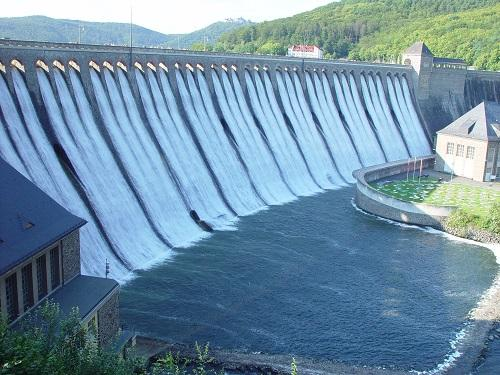
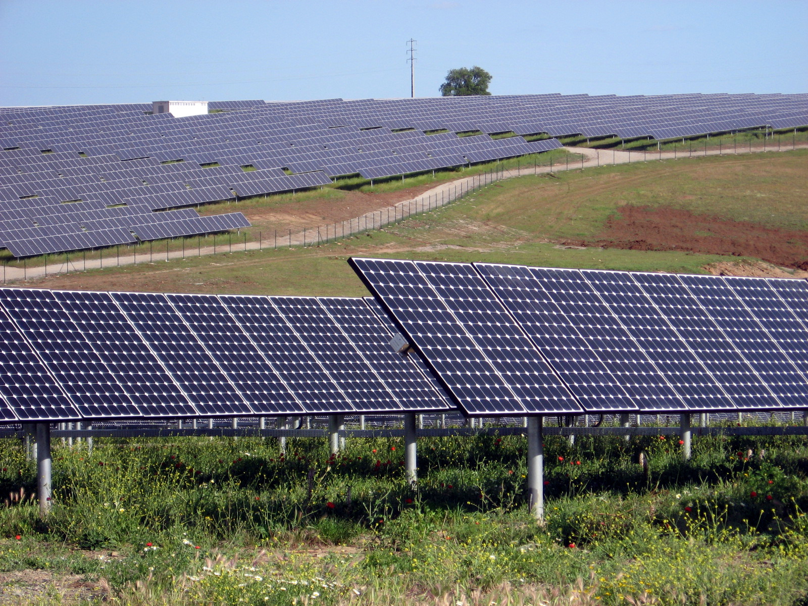

Windkraft
Die Windkraft ist heute einer der wichtigsten Stromquellen in Deutschland. Bei Windkraftanlagen unterscheidet man zwischen Onshore-Anlagen an Land und OffshoreWindparks auf dem Meer, diese sind durch den durchgehenden Seewind besonders effizient. Mit einer Gesamtleistung von mittlerweile ca. 78 Gigawatt ist Windkraft die größte Energiequelle in Deutschland. Sie lieferte im Jahr 2025 rund 131 Terawattstunden, etwa 30 Prozent des gesamten deutschen Stroms. Da Windräder auch in den dunklen, verbrauchsintensiven Winterzeiten laufen, ergänzen sie die Solarenergie perfekt. Sie produzieren genau dann die größten Mengen Strom, wenn Photovoltaik wetterbedingt kein Strom bringt.

Doch während die Energiewende voranschreitet, zeigen sich die Probleme. Das größte ist das Stromnetz: Der meiste Windstrom wird im Norden erzeugt, die großen industriellen Abnehmer sind aber im Süden. Da der Bau neuer Stromtrassen jahrelang dauert und hinterherhinkt, sind die Netze oft überlastet. Das führt dazu, dass Windräder im Norden bei Starkwind trotzdem abgeschaltet werden müssen (Redispatch), was die Verbraucher jährlich Milliarden an Entschädigungen kostet, während saubere Energie verloren geht. Ein weiteres Problem ist die Wetterabhängigkeit (Volatilität). Bei großflächigen Flautephasen, Zeiten ohne jeglicheb Wind, drohen Versorgungslücken, da es in Deutschland an großen Stromspeichern fehlt, um Überschüsse für windstille Tage zu sichern. Zuletzt wird das Ausbautempo durch einen Fachkräftemangel beim Bau und Netzanschluss sowie durch logistische Hürden, wie langwierige Genehmigungsverfahren für den komplizierten Transport der riesigen Rotorblätter über enge Straßen massiv ausgebremst. Trotzdem hat die Windkraft im Rahmen der Energiewende bisher in Deutschland schon weit über 100 Millionen Tonnen CO₂ eingespart. Zudem hat Windkraft mehr als 120.000 Arbeitsplätze erschaffen. Damit die Energiewende jedoch dauerhaft und zukünftig funktioniert, müssen in den kommenden Jahren vor allem die jetzigen Probleme gelöst werden.
Biogas, Wasserkraft, Wellenenergie
Die Energiewende wird in der öffentlichen Wahrnehmung meist von zwei dominierenden Bildern geprägt: riesigen Windrädern auf Feldern und glänzenden Solaranlagen auf Hausdächern. Doch Sonne und Wind haben ein bekanntes Problem, denn sie sind wetterabhängig. Scheint keine Sonne und herrscht Windstille, droht eine Versorgungslücke. Genau hier kommen drei oft unterschätzte, aber faszinierende Technologien ins Spiel, die als verlässliche Partner die Zukunft unserer Energieversorgung sichern. Dies wird umso wichtiger, da Experten im Zuge der umfassenden Dekarbonisierung durch den Einzug von EMobilität, Wärmepumpen und der Digitalisierung von einer Verdopplung des weltweiten Stromverbrauchs ausgehen. Diesen massiven Hunger nach elektrischer Energie können Wind und Sonne allein kaum stemmen.
Während andere Konzepte der Energiewende – wie der Netzausbau, Wasserstofftechnologien oder die tiefe Geothermie – ebenfalls wichtige Säulen bilden, liegt der Fokus hier auf der schnellen Flexibilität im Stromnetz. Ein absoluter Flexibilitäts-Künstler unter den erneuerbaren Energien ist dabei das Biogas. Es entsteht, wenn organische Materialien wie Gülle, Mist, Erntereste oder der Bioabfall aus der braunen Tonne unter Ausschluss von Sauerstoff vergären. Das dabei entstehende Gas kann direkt in Strom und Wärme umgewandelt oder gereinigt in das bestehende Erdgasnetz eingespeist werden. Der große Vorteil liegt in der Speicherbarkeit: Während Wind- und Solaranlagen völlig vom Wetter abhängig sind, können Biogasanlagen genau dann hochgefahren werden, wenn eine Flaute herrscht. Fachagenturen für Nachwachsende Rohstoffe und Biomasseforschungszentren belegen, dass die Umstellung auf diesen bedarfsgerechten Flexbetrieb technisch ausgereift ist. In einer grünen Energiewelt mit verdoppeltem Bedarf fungiert Biogas laut Branchenexperten also als die perfekte Feuerwehr, um Spitzen im Strombedarf flexibel und CO₂-neutral abzufedern.

Ein weiterer wichtiger Stabilisator ist die Wasserkraft, ein echter Veteran der Stromerzeugung, der heute wichtiger denn je ist. Laufwasserkraftwerke in Flüssen nutzen die konstante Strömung, um rund um die Uhr eine solide Grundlast an Strom zu liefern. Noch spektakulärer sind Pumpspeicherkraftwerke an großen Staudämmen, die wie riesige, natürliche Batterien funktionieren. Gibt es zu viel Strom im Netz, wird Wasser den Berg hinauf in ein Becken gepumpt, und wird der Strom abends gebraucht, rauscht das Wasser wieder ins Tal und treibt Turbinen an. Diese Anlagen können innerhalb von Minuten gigantische Mengen Strom liefern, wenn das Netz zu kollabieren droht. Einschlägige energiewirtschaftliche Statusberichte heben hervor, dass Pumpspeicher infolge des Ausbaus von Wind und Solar die bis auf Weiteres wichtigste Möglichkeit für eine großmaßstäbliche Stromspeicherung im Netz darstellen. Analysen von Umweltbehörden und Herstellern zeigen, dass diese bewährten Kraftwerke – aufgerüstet mit fischfreundlichen Turbinen und effizienteren Generatoren – unverzichtbare Anker der Stabilität gegen den prognostizierten Verbrauchsboom sind. Die jüngste und technologisch spannendste der drei Energien kommt hingegen aus den Ozeanen. Wellenkraftwerke nutzen die unaufhörliche mechanische Bewegung des Meeres, sei es durch schwimmende Bojen, die sich mit den Wellen auf und ab bewegen, oder durch Küstenkonstruktionen, in denen das Wasser Luft durch Turbinen presst. Berichte internationaler Energieorganisationen verdeutlichen, dass Wellenbewegungen im Vergleich zum Wind viel kontinuierlicher und berechenbarer sind. Das macht sie zu einem idealen Partner für die volatilen Klassiker Solar und Wind.
Daten von Fachportalen stützen die These, dass die Wellenenergie zu einer entscheidenden Säule wird, um die drohende Verdopplung des globalen Energiebedarfs vor allem in Küstenregionen weltweit sauber abzudecken, sofern es gelingt, die Anlagen durch neue, extrem widerstandsfähige Materialien dauerhaft gegen Stürme und aggressives Salzwasser zu schützen. Am Ende zeigt sich, dass die Energiewende kein Solo-Projekt von wenigen Technologien ist. Erst das Zusammenspiel aller unterschiedlichen Ansätze macht das zukünftige System sicher. Vor allem vor dem Hintergrund, dass sich unser Energieverbrauch in Zukunft verdoppeln wird, braucht es ein stabiles Fundament. Während Biogas die Lücken füllt, wenn die Natur pausiert, sichert die Wasserkraft die Netzstabilität und die Wellenenergie erschließt völlig neue, unerschöpfliche Ressourcen. Zusammen bilden sie das unsichtbare Rückgrat einer sauberen und sicheren Zukunft.
Solar
2040 wird Deutschland Schätzungen nach 850–1.100 TWh/Jahr verbrauchen (NEP 2025, McKinsey 2025). Wir gehen jedoch von 1100TW/h pro Jahr aus. Bei einem angenommenen Anteil von 30 % Solarstrom bis 2040, auf den man durch eine proportionale Erhöhung der erneuerbaren Energien kommt. Dadurch kommt man auf eine Stromerzeugung von ca. 330 TWh/Jahr bis 2040 durch Solarstrom. Aktuell erzeugt Deutschland rund 87,5 TWh/Jahr aus Solar (Fraunhofer ISE, 2025). Deshalb müsste Deutschland seine Solarproduktion fast vervierfachen (~3,8-fach). Man bräuchte rund 240 TWh mehr Solarstrom.
Es gibt ca. 6.000 km² Potenzial auf Dächern und sogar 12.000 km² auf Fassaden (IÖR / Fraunhofer ISE, 2021). Allein damit ließe sich theoretisch der gesamte Stromverbrauch Deutschlands mehrfach decken. Man bräuchte nur etwa 1.200 km², um 240 TWh/Jahr mehr zu erzeugen – deutlich weniger als 10 % der technisch möglichen Fläche. Mit äquivalentem Stromspeicher kostet 1 m² Solaranlage inkl. Speicher und Anschluss ca. 350–500 Euro (aktuelle Marktpreise 2026). Damit käme man für 1.200 km² auf rund 480 Mrd. Euro als grobe Kostenschätzung für Anlage und Speicher – ohne Grundstückskosten und Netzinfrastruktur, die die tatsächlichen Gesamtkosten erheblich erhöhen würden. Jedoch könnten sich die gesamten Ausgaben laut 1komma5.com und anderen Quellen, geschätzt innerhalb von 15-20 Jahren ammortisieren, da es sich um eine einmalige Investition handelt, um danach kostenlosen Strom zu erhalten. Man könnte die einmaligen Investitionen danach von den Verbrauchern, die den Strom nutzen, bezahlen lassen.

Jedoch müsste man die Ausbaugeschwindigkeit deutlich erhöhen, da man nach aktuellem Ausbautempo niemals bis 2040 fertig werden würde. Pro Jahr müsste der Staat die 480Mrd. € auf 14 verbleibende Jahre verteilen. Jährlich wären das Investitionen von 34 Mrd. €.
Stromwendekosten
Die Billionen-Rechnung: Was kostet uns die Energiewende bis 2040? Die Transformation unseres Energiesystems ist eines der größten wirtschaftlichen und infrastrukturellen Projekte der modernen Geschichte. Doch wie hoch sind die realen Kosten, wo liegen die finanziellen Treiber, und welche Alternativen stehen zur Debatte? Basierend auf einer aktuellen Studie der Deutschen Industrie- und Handelskammer (DIHK) blicken wir auf das Status-Quo-Szenario und den viel diskutierten „Plan B“.
Status Quo: Das 5-Billionen-Szenario
Die Beibehaltung der aktuellen Energiewendepolitik erfordert bis zum Jahr 2049 Gesamtinvestitionen in Höhe von 4,8 bis 5,4 Billionen Euro. Umgelegt auf das Jahr bedeutet dies einen massiven Anstieg: Statt der derzeitigen 82 Milliarden Euro müssten jährlich 113 bis 316 Milliarden Euro investiert werden. Die Kostenblöcke teilen sich wie folgt auf:
Energieimporte: Mit 2,0 bis 2,3 Billionen Euro bilden Importe die größte Einzelkomponente der gesamten Kostenstruktur.
Netzinfrastruktur: Der Ausbau und kontinuierliche Betrieb der Strom- und Verteilnetze schlägt mit rund 1,2 Billionen Euro zu Buche.
Neue Erzeugungskapazitäten (CAPEX):Die Investitionen in Anlagen für Wind, Wasserstoff und Photovoltaik erfordern 1,1 bis 1,5 Billionen Euro.
Betriebskosten der Kraftwerke (OPEX): Für den laufenden Betrieb und die Wartung fallen 495 bis 498 Milliarden Euro an.
Die Folge für den Standort: Wettbewerbsdruck Diese enormen Summen spiegeln sich in den aktuellen Energiepreisen wider – mit drastischen Konsequenzen für die Wirtschaft:
Jedes dritte Unternehmen bewertet die Energiewende in der aktuellen Form als klaren Wettbewerbsnachteil. In der Industrie sieht sogar die Hälfte aller Betriebe erhebliche Marktanteile gefährdet. Die Folge sind bereits spürbare Rückgänge in der Produktionsentwicklung, Werksschließungen oder die gezielte Verlagerung von Produktionsstätten ins Ausland.
Plan B: Kosten senken um jeden Preis?
Als Gegenentwurf gilt ein alternatives Szenario, das eine Kostenreduktion von 530 bis 910 Milliarden Euro verspricht. Die Kernpfeiler dieses marktorientierten Ansatzes basieren auf:
Einer radikalen Vereinfachung des CO2-Zertifikatenhandels.
Konsequenter Technologieoffenheit statt staatlicher Vorgaben.
Dem Abbau von Subventionen und gezielten Unterstützungen für einzelne Technologien.
Das Dilemma: Risiko gegen Ersparnis
Obwohl Plan B die Staatskassen und Unternehmen spürbar entlasten würde, warnt die Branche vor den Kehrseiten. Laut Einschätzungen aus Verbänden wie dem Bundesverband Erneuerbare Energie (BEE) birgt dieser Weg fundamentale Risiken:
Verunsicherung für Investoren: Ohne verlässliche staatliche Leitplanken drohen dringend benötigte private Investitionen wegzubrechen.
Verzögerung der Klimaziele: Der Verzicht auf gezielte Förderung gefährdet das Erreichen der Netto-Null-Ziele im vorgesehenen Zeitrahmen.
Verlangsamung des grünen Marktes: Der Übergang zu einer nachhaltigen Wirtschaft verliert an Dynamik, wodurch technologische Vorreiterrollen verloren gehen könnten.
Fazit: Ein Balanceakt zwischen Budget und Klimaschut
Die Zahlen zeigen deutlich: Die Energiewende ist kein reines Öko-Projekt, sondern die größte ökonomische Weichenstellung der kommenden Jahrzehnte. Während das aktuelle Modell die internationale Wettbewerbsfähigkeit der Industrie gefährdet, bedroht der günstigere „Plan B“ die Planungssicherheit und die Klimaziele selbst. Die Politik steht vor der Herkulesaufgabe, Kostenffizienz und Innovationsgeschwindigkeit miteinander zu vereinen.